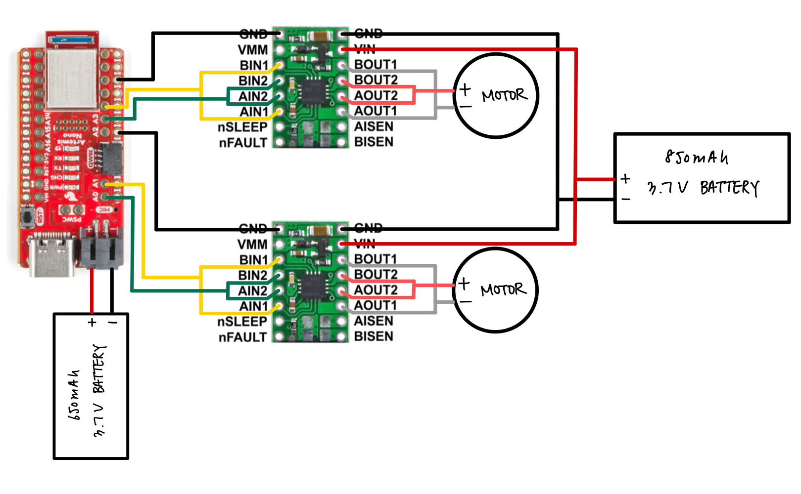

Projects
Fast Robots
I built an RC platform equipped with an IMU and ToF sensors, featuring open-loop control, PID-based position and orientation control,
a Kalman filter for localization, and a waypoint planner. The system utilizes BLE commands for execution.



C++ • Embedded • Controls • BLE • Hardware
Course write‑ups →
Telehealth IoT
We developed a smart blood pressure monitor that uses BLE to transmit data to an IoT gateway, which forwards it through LoRa to The Things Network, an IoT ecosystem.
Python scripts running on the server parse the incoming data and store it in a SQL database, allowing Cayuga Health, a local healthcare provider in Ithaca, to securely retrieve and review patient blood pressure readings.
This system eliminates the need for Wi-Fi, enabling underserved populations with limited internet access to monitor their blood pressure at home, saving time and resources while reducing strain on the healthcare system.
IoT • Python • Hardware
Plantar Pressure Distribution Pad
With a teammate, I developed a prototype training pad designed to help users achieve optimal plantar pressure distribution in the foot.
We also created a software GUI that provides real-time visualization of pressure patterns, enabling users to monitor and adjust their foot pressure for improved balance and alignment.
Python • Hardware
Cornell Electric Vehicles
I served as both Manufacturing Lead and Drivetrain Subsystem Lead on a student-led team that designs and builds an energy-efficient electric vehicle each year to compete in the Shell Eco-marathon.
In this role, I spearheaded a major drivetrain redesign, replacing the traditional single-shaft motor with a mechanical differential, sprocket, and chain, with a dual-motor system in which independent shaft motors are integrated directly into each rear wheel, improving torque transmission efficiency and simplifying the overall drivetrain architecture.
CAD • Manufacturing